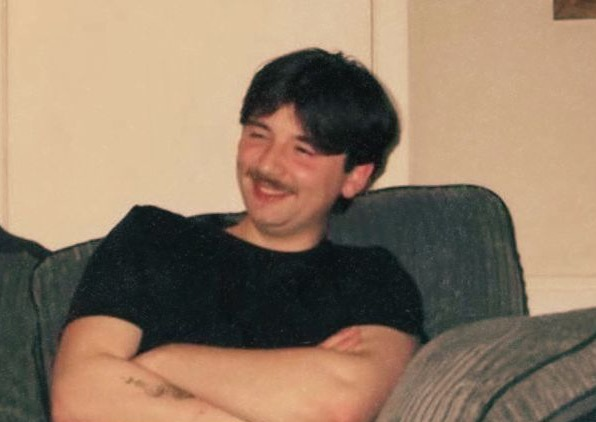

Mara Musica · Remote music production by James Walker
You know what it should feel like. Let's make itsound like that.
For artists who know exactly what they want to say but can't quite get the sound. We talk first, then build it together from scratch, 100% remote. It still sounds like you at the end.
The one rule
Pressure kills music. Not just the average stuff. All of it. So I take it out of the room before it has a chance to settle in.
Selected work
Songs that started as conversations.
Every one of these was built with the artist, not handed to them.
How it works
We don't just hop on a call and bash out a song.
Relaxed on the surface, quietly tight underneath. And you never have to find or travel to a studio.
-
01
Pre-production
I do my homework first. We talk about you, what you want to make, and how you want to make it. Sometimes that takes two hours. That's how I map out the song's journey around you.
-
02
Remote sessions
Using Muse, I record you from your own mic straight into my Ableton session over a video call. We dig samples, pick drums and riff melodies together in real time.
*It also means I can record in my comfy pyjamas and not feel silly.
-
03
Your song portal
Every song gets its own personalised Notion portal. It shows what stage we're at, how much progress we've made and when I'm working on it, plus notes, contracts, invoices, timelines and deadlines.
-
04
Finished, not half-done
I keep an eye on the clock so you don't have to. Breaks before anyone hits a wall, gentle nudges back from tangents. You end up with a song, not another half-demo.
“When it's working, it's like I've become a satellite dish receiving ideas from somewhere else. It's very woo woo, but that's just how it feels.”
Is this for you?
For artists who take music seriously but can't quite get the sound they want.
We'll get on if…
- You know what the song should feel like but can't build the world around it
- You've got melodies and lyrics, and a folder of demos that never quite land
- You want to be in on the decisions: samples, drums, arrangement
- You can't find the time to find and travel to a studio
- You've worked with a producer before who stamped their sound all over your idea
Probably not a fit if…
- You want to send a brief and collect a finished track
- You're after a quick "just mix this" job
- You disappear between sessions, then need it all done yesterday
Urgency should go both ways. That's the whole deal.

About
I'm James. Mara Musica is me.
I found production software at fourteen and it was the only thing I had a real knack for from the get-go. I loved every second of it. Still do.
Along the way I noticed I enjoyed artist sessions more than making my own stuff, so I leaned into working with other people. I host songwriting camps on a remote Scottish island, and I've DJ'd across Central America, picking up reggaeton grooves and amapiano rhythms that sneak into almost everything I make.
Both places taught me the same thing: the best music happens when the room feels safe enough for everyone to stop performing and start saying what they actually mean.
I'm not trying to put my sound on your record. I'm trying to be the clearest channel between what you're carrying and the song it becomes.
- Producing since
- Age 14
- Works
- 100% remote
- Sounds
- Pop, singer-songwriter, world grooves
- Camps
- Orkney songwriting retreats
Press & radio
As heard on BBC Introducing, seen in Hot Press.
Discography
Everything I've produced.
Kind words
From people who've been in the room.
Book a chat
A free chat. No pitch.
Just a video call to hear what you're working on and see if we'd make good music together. Pick a time and it drops straight into my calendar. You'll get the call link by email.
- Bring a voice memo, a demo, or just the story
- We'll talk about what the song needs to feel like
- If we're a fit, we'll plan your first session
Prefer email? hello@maramusica.com
Questions
The stuff people usually ask.
How does remote production actually work?
We talk on a video call while I run Muse, which records your microphone straight into my Ableton session in real time. You hear everything as it's built. All you need is a decent mic, headphones and a laptop.
Do I need a finished song to work with you?
Not at all. A melody you've been humming, a few lines in your notes app, or just a feeling you can't shake. That's plenty to start with.
Will the track end up sounding like "a Mara Musica production"?
I really try not to let that happen. My job is to get what's in your head out into the world, not to make it sound like my portfolio. You'll be picking sounds with me the whole way.
How will I know what's happening between sessions?
Your personal Notion song portal. It shows what stage the song is at, when I'm working on it, and holds every note, contract, invoice and deadline in one place.
What genres do you work in?
Mostly pop and singer-songwriter, usually with something unexpected underneath: driven drums, reggaeton or amapiano grooves, live guitar. The common thread is that the vocal melody leads.
How much does it cost?
It depends on the project. Single sessions, full songs and EPs are priced differently. We'll go through it on the consult call so there are no surprises.